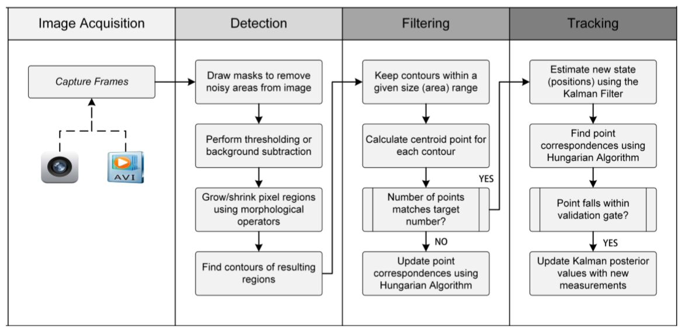

There are multiple techniques Kalman Filter which show the motion of different animals that may not be captured in a solitary process model and Hungarian approach is used find the ideal destination paths of identified objects and use a gating approach to reject poor estimates. The latest accessible tracking program for animal behavior is ToxTrac. It has the competent to locate animals both on land and water. This program employ Kalman Filter to guess the animal direction or trajectories for the detected animals. It combines the existing trajectories to generate tracks. The goal of tracking problem which is also called as estimation of trajectory in a image plane, is to detect objects in video frames by utilizing priori information of the targets. The object tracking problem can be formulated as:
Let I = {Ik : k ∈ N} represent the frames of a video sequence, with Ik ∈ EI being the frame at time k, defined in EI, the space of all possible images. Tracking a single object can be formulated as estimating the time-series:
over the set of discrete time instances indexed by k, based on information in I. The vectors xk ∈ Es are the states of the target and Es is the state space. The time series X is known as the trajectory of the target in Es. Information such as each animal's position and shape can be encoded in the state vector.
The purpose of object detection is to assess whether to classify each pixel in each frame as the foreground or the background in a method known as segmentation. This operation can be performed independently on each image or use the temporary information calculated from a sequence of frames to reduce the number of erroneous detections. The tracker executes object correspondance from one frame to the next once the pixels are detected in a frame. We have two common methods to help with foreground object segmentation from their respective backgrounds:
1. Grey Scaling :
This is the easiest and often most efficient type of segmentation available in most open-source softwares. This method takes a gray picture and conducts segmentation based on relative pixel intensities by evaluating whether they are above or below an intensity value identified by the user. Greay scale thresholding can be carried out as follows:
wi, j is the binary value assigned to the pixel present at coordinate (i,j) in image Ik and T is a user-defined threshold with an intensity value between 0-255. After thresholding an image we get the output in the form of binary image with thick black line and white pixels which represent the background and fore ground objects respectively.
2. Background Subtraction:
The intensity values vary with lighting so relying only on thresholding will not help. Therefore, we need to take subtraction into consideration where the comparision of distinction between subsequent frames and an original static background reference frame will yeild us with alternate intensity values.
detecting animals in the real world might want us to consider dynamic lighting condition to recognise.
3. Rejecting erroneous detections:
Above discussed methods give good results yet we have a problem of noise in the form of unwanted objects or disjointed region of pixels. Without creating a unique appearance model for each object, we can reduce the false positive error by confidently discarding detected objects whose area is outside of a user defined size parameter determined at run-time.
Kalman Filter can be used to determine predictions of the object trajectories in correspondance to the new measurements and filter predictions when there is uncertinty in new measurements. The Kalman Filter addresses the general problem of trying to estimate the state x ∈ < n of a controlled discrete time process governed by the equation of linear stochastic difference:
where state transition matrix A relates the state at the previous time step k−1 to the state at the current step k and Q represents the process noise matrix. For the case of modeling a kinematic first-order system that considers objects with xy position and velocity in a 2D space can be represented in matrix form by [4]:
The Kalman Filter estimates a process state, recursively at some point and then gets feedback in the form of measurements that are often noisy. The Kalman Filter is updated through two sets of equations known prediction and correction. The state and covariance estimates are predicted from time step k-1 to step k in the forecast phase. The first step in the correction phase is to evaluate the Kalman gain K and then use a process measurement to develop a posteriori state estimate. The final stage is to calculate a covariance estimate for a posteriori mistake.
A histogram of oriented gradients (HOG) is used in computer vision to detect animal movement in a video or picture. First the input is fed to the color normalization block.Color normalization is used for animal recognition on color images when it is important to remove all intensity values from the picture while preserving color values. Once this is done the next step is to compute the gradient. This is done in the gradient computation module. Once the magnitude of gradient is obtained we create cell histograms. The HOG descriptor is then the vector of the components of the normalized cell histograms from all of the block regions. These blocks typically overlap, meaning that each cell contributes more than once to the final descriptor. In the normalization module the histogram is normalized. Finally, the image goes to cascade classifier for classification of the object. HOG descriptor is suitable for animal detection in video or images due to some key advantages compared to other descriptors. First, it operates on local cells, so it is invariant to geometric and photometric transformations. Secondly, coarse (spatial) sampling, fine orientation sampling, and strong local photometric normalization allow different body movement of animals to be overlooked if they maintain a roughly upright position.